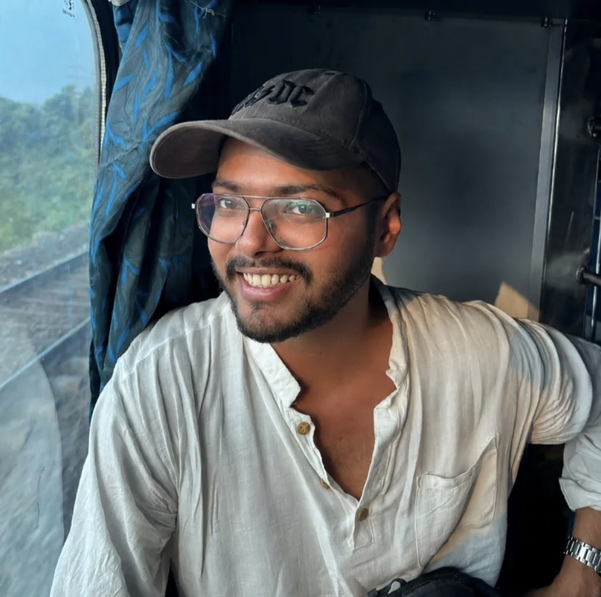

Arshad Ahmed
I’m a student of physics and biology interested in how DNA and proteins move. How does a stretch of DNA open into a bubble when it is heated? What physical mechanisms govern denaturation? How does a protein switch from one fold to another? I use molecular dynamics simulations and data analysis to go after these questions.
I’m a 4th-year BS-MS student in Interdisciplinary Sciences at IISER Pune, expected to finish in 2028. Since April 2026 I’ve been at the University of Cape Town, working with Dr Malcolm Hillebrand on DNA bubble formation. I also research how to design physics learning experiences for secondary school students, and I write stories and poems.

AAIISER Pune
Pune, India
research
DNA bubble formation
University of Cape Town, Department of Mathematics and Applied Mathematics. Supervisor: Dr Malcolm Hillebrand
I wrote a pipeline in Python, OpenMM and GROMACS that finds, measures and plots the short-lived openings in DNA (“breathing”) in simulation trajectories. I’m now comparing the all-atom results with coarse-grained models to understand what drives denaturation.
Fold-switching proteins
IIT Bombay, Department of Chemistry. Supervisor: Dr Ishita Sengupta
I analysed experimental folding data to model folding pathways and free-energy landscapes, and to look for on-pathway intermediates in metamorphic proteins.
Polymer physics and DNA biophysics
IIT Bhubaneswar, Department of Physics. Supervisor: Dr Indresh Yadav
A reading project on random walks, self-avoiding walks and statistical models of polymers, and on facilitated diffusion and protein search along DNA.
science education
Physics education research
Azim Premji University. Supervisor: Dr Anish Mokashi
I worked on designing learning experiences in physics for secondary school students: building conjecture maps and instructional modules from constructivism, constructionism and counterfactual reasoning, and going through high-school physics curricula with school teachers.
Teacher workshop
Eklavya Foundation, Bhopal
A workshop for science teachers and teacher-educators from across the country. I helped run the physics sessions on the science of sound and documented the sessions and the discussions.
Disha
IISER Pune
Disha is a student-run organisation for accessible education for underprivileged students in and around Pune. I coordinated its Science Nurture Program, which teaches science in government-aided schools, and I’m now the General Coordinator.
SciCon
Mimamsa, IISER Pune
Coordinator of IISER Pune’s science fest, handling planning and logistics between student committees, faculty advisors and visiting schools.
writing and skills
I write short stories, poems and reflections on my blog, Arsh Se Farsh Tak.
Technical skills: molecular dynamics (GROMACS, OpenMM), Python, Matplotlib, PyMOL, DynaFit, LaTeX, C++ for Arduino. Languages: English, Hindi, Urdu and Odia.
If you’d like to talk about my work or any of the projects above, email me at arshad.ahmed@students.iiserpune.ac.in.